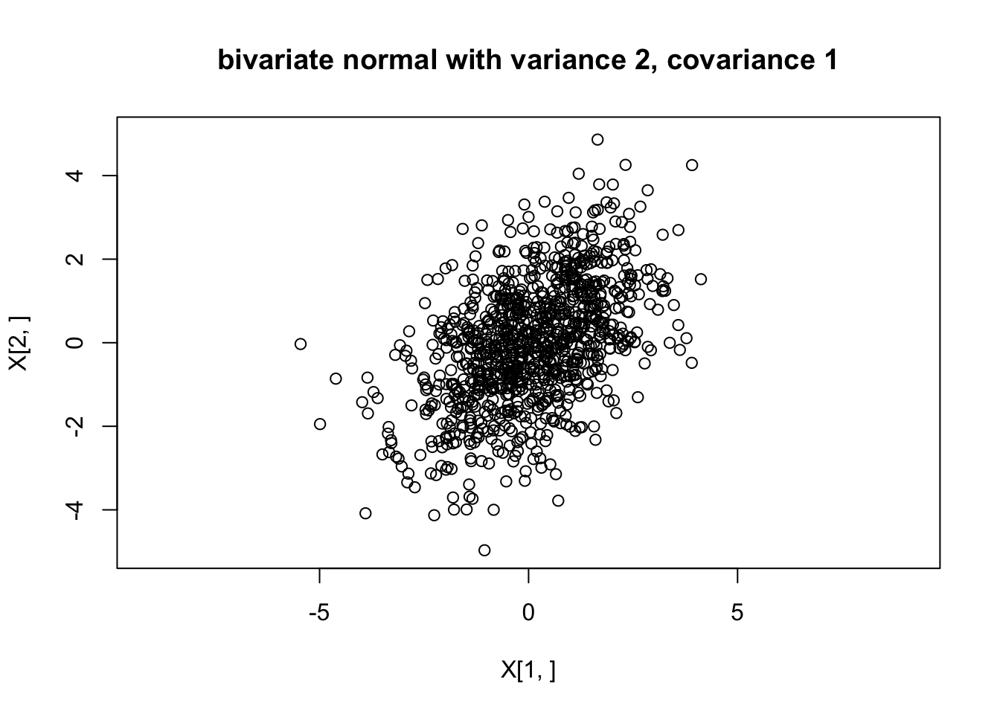
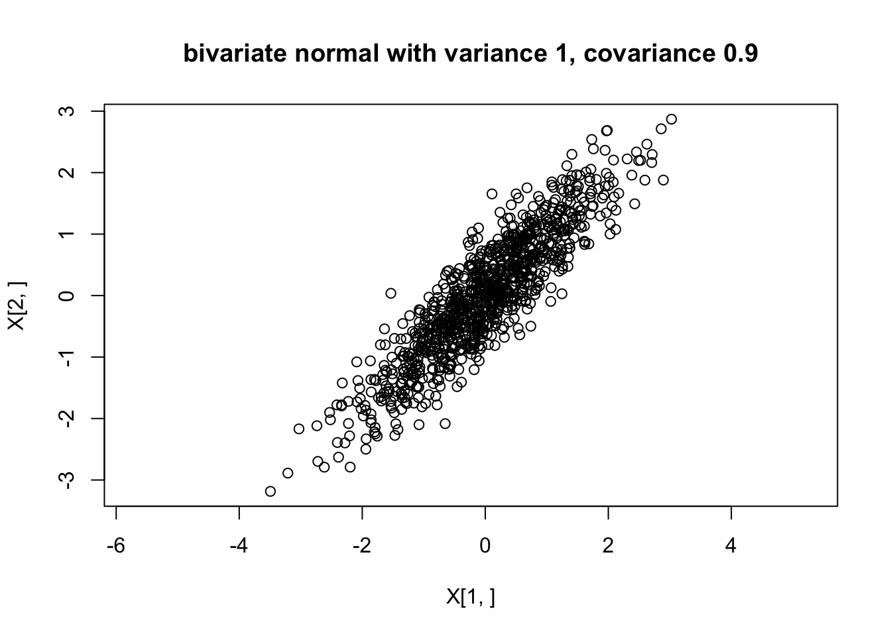

Last updated: 2016-02-15
Code version: 01b376bdda3d62f53d333bd4ab6f8dbe2efc18b0
You need to know what a univariate normal distribution is, and basic properties such as the fact that linear combinations of normals are also normal. You also need to know the basics of matrix algebra (eg matrix multiplication, matrix transpose).
There are several equivalent ways to define a multivariate normal, but perhaps the most succinct and elegant is this one, which I took from Wikipedia: “a random vector is said to be \(r\)-variate normally distributed if every linear combination of its \(r\) components has a univariate normal distribution”. The special case \(r=2\) is usually referred to as the “bivariate normal” distribution. And the terminology “\(r\)-dimensional multivariate normal” means the same as \(r\)-variate normal.
Perhaps more insight can be obtained by specifying one way to simulate from a multivariate normal distribution. Suppose \(Z_1,\dots,Z_n\) are independent random variables each with a standard normal distribution \(N(0,1)\). Let \(Z\) denote the vector \((Z_1,\dots,Z_n)\), and let \(A\) be any \(r \times n\) matrix, and \(\mu\) be any \(r\)-vector. Then the vector \(X = AZ+\mu\) has an \(r\)-dimensional multivariate normal distribution with mean \(\mu\) and variance-covariance matrix \(\Sigma:=AA'\). (Here \(A'\) means the transpose of the matrix \(A\).) We write \(X \sim N_r(\mu,\Sigma)\).
Note that \(E(X_j)=\mu_j\) and \(cov(X_i,X_j)= \Sigma_{ij}\).
When we simulate \(X\) this way, any linear combination of the elements of \(X\) is a linear combination of \(Z\), and so is univariate normal because any linear combination of univariate normals is univariate normal. That is, when we simulate \(X\) this way it satisfies the definition above for being \(r\)-variate normal.
Suppose we define \(X_1 = Z_1 + Z_2\) and \(X_2 = Z_1 + Z_3\) where \(Z_1,Z_2\) and \(Z_3\) are independent standard normal variables. Then \(X = AZ\) where \(A = \begin{pmatrix} 1 & 1 & 0 \\ 1 & 0 & 1 \end{pmatrix}\), and so \(X \sim N_2 (0,\Sigma)\) where \(\Sigma = AA' = \begin{pmatrix} 2 & 1 \\ 1 & 2 \end{pmatrix}\).
Here is some code to simulate from this distribution:
Z = rnorm(3)
A = rbind(c(1,1,0),c(1,0,1))
print(A %*% t(A)) # show Sigma [,1] [,2]
[1,] 2 1
[2,] 1 2X = A %*% ZAnd if we want to simulate lots of examples, we can do this lots of times. The following code simulates from this distribution 1000 times and plots the points.
X = matrix(0,nrow=2,ncol=1000)
A = rbind(c(1,1,0),c(1,0,1))
for(i in 1:1000){
Z = rnorm(3)
X[,i] = A %*% Z
}
plot(X[1,],X[2,],main="bivariate normal with variance 2, covariance 1",asp=1,xlim=c(-5,5),ylim=c(-5,5))
And we can check the sample covariances are close to the theoretical values:
cov(t(X)) [,1] [,2]
[1,] 2.050361 1.006676
[2,] 1.006676 2.130650From the above we can see that you can simulate from a multivariate normal with any mean \(\mu\) and variance covariance matrix \(\Sigma\) provided that \(\Sigma\) can be written as \(\Sigma = AA'\) for some matrix \(A\). This turns out to be possible if and only if \(\Sigma\) is what is known “Positive semi-definite” matrix - that is a symmetric matrix with non-negative eigenvalues.
Given a positive semi-definite matrix \(\Sigma\) there are multiple ways to find a matrix \(A\) such that \(\Sigma=AA'\) (and indeed multiple matrices \(A\) that obey this). However, for our purposes here we only need one way, and here we use the ``Cholesky decomposition“, which finds a unique lower triangular matrix \(L\) such that \(LL' \Sigma\). Here’s an illustration of the Cholesky decomposition (the R function ‘chol’ finds an upper triangular matrix, so we transpose it here to make it lower triangular).
Sigma = rbind(c(2,1),c(1,2))
L = t(chol(Sigma))
L [,1] [,2]
[1,] 1.4142136 0.000000
[2,] 0.7071068 1.224745L %*% t(L) [,1] [,2]
[1,] 2 1
[2,] 1 2We can use this to generate a multivariate normal. Here we use it to generate a bivariate normal with covariance matrix \[\begin{pmatrix} 1.0 & 0.9 \\ 0.9 & 1.0 \end{pmatrix}\]
my_rmvnorm=function(mu,Sigma){
r = length(mu)
L = t(chol(Sigma))
Z = rnorm(r)
return(L %*% Z + mu)
}
X = matrix(0,nrow=2,ncol=1000)
for(i in 1:1000){
X[,i] = my_rmvnorm(c(0,0),rbind(c(1.0, 0.9),c(0.9,1.0)))
}
plot(X[1,],X[2,],main="bivariate normal with variance 1, covariance 0.9",asp=1)
NOTE: If you want to actually generate multivariate normal random variables in R you should use a more carefully-written function like ‘’mvtnorm::rmvnorm’’.
sessionInfo()R version 3.2.3 (2015-12-10)
Platform: x86_64-apple-darwin13.4.0 (64-bit)
Running under: OS X 10.11.2 (El Capitan)
locale:
[1] en_US.UTF-8/en_US.UTF-8/en_US.UTF-8/C/en_US.UTF-8/en_US.UTF-8
attached base packages:
[1] stats graphics grDevices utils datasets methods base
other attached packages:
[1] knitr_1.12.3
loaded via a namespace (and not attached):
[1] magrittr_1.5 formatR_1.2.1 tools_3.2.3 htmltools_0.3
[5] yaml_2.1.13 stringi_1.0-1 rmarkdown_0.9.2 stringr_1.0.0
[9] digest_0.6.9 evaluate_0.8